データコネクタ
Data-Connector
接続機能あるいはデータコネクタは、OriginPro 2019bで追加された新しいインポート機能です。この新しいフレームワークは、Originの従来のファイルインポート方法よりも、スピード、シンプルさ、データ整合性で優れます。コネクタとインポート機能との違いについては、次を参照してください。
データの整合性
データコネクタは、従来のインポート機能よりも高度なデータ保護が可能です。
- デフォルトでは、データコネクタを含むブックではデータは編集できません。これにより、偶発的な変更や削除から保護できます。
- テキスト/CSVまたはExcelコネクタを使用してインポートしたデータは、デフォルトでソート可能ですが（列を選択して、ワークシート: ソート（ワークシート））、それ以外の場合は編集できません。
Text/CSVとExcel以外のコネクタでインポートされたデータは、デフォルトでソートできません（編集もソートも不可）。
- コネクタ経由でデータをインポートする前に、環境設定：オプションダイアログを使用して、コネクタインポートデータの編集およびソート動作の両方を変更できます。
- 接続されたデータのルーチン後処理は、ワークシートにスクリプトを埋め込むことで設定できます。 後処理により、接続されたデータから編集保護を削除する必要性がなくなり、データの保護に役立ちます。
 | 「データ保護」によって、インポートされたデータを変換する目的で（たとえば、値の設定などを使って）ワークシートの最後に列を追加するといった操作ができなくなるということではありません。「データ保護」は、元のデータを変更することを防ぐのみです。
インポート後のデータを自由に編集する必要がある場合は、コネクタアイコン をクリックし、(a)シートを接続しない、(b) データコネクタを削除して、データコネクタを削除できます。それぞれの違いについては、下のコネクタのメニューを参照してください。ほかに、(c)インポートしたデータのロック解除 (Origin 2021b 以降で利用可能)も利用できます。 をクリックし、(a)シートを接続しない、(b) データコネクタを削除して、データコネクタを削除できます。それぞれの違いについては、下のコネクタのメニューを参照してください。ほかに、(c)インポートしたデータのロック解除 (Origin 2021b 以降で利用可能)も利用できます。
|
シートにコネクタを追加
ワークシートまたは行列にコネクタを追加すると、シシートの左上にコネクタオブジェクトが追加されます。このオブジェクトは、データソースへの接続を管理するために使用する情報が保存されています。
接続状態によって表示されるアイコンが異なります。
| アイコン
|
接続状態
|
|
|
シートはデータコネクタの宛先として使用されています。
|
|
|
自動更新が有効になっています。詳細は以下のセクションを参照ください。
|
| -
|
シートはまだデータコネクタによって使用されていません。
|
|
|
データソースに更新があります。
|
|
|
データソースのファイルが存在しません。
|
 | コネクタアイコンにマウスカーソルを合わせると、ツールチップとして基本のコネクタ情報が表示されます。 ツールチップの内部を右クリックしてコピーを選択すると、情報をクリップボードにコピーできます。
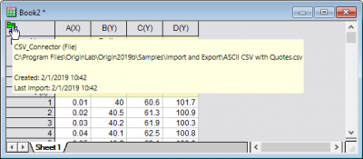
|
ダイアログとメニュー
コネクタごとのダイアログ設定は、次のトピックを参照してください。
コネクタを追加したら、シートのコネクタアイコンをクリックして接続を管理できます。
コネクタメニュー：
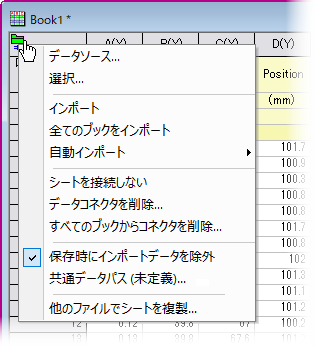
| データソース
|
ダイアログが開き、データソース選択と変更が可能です。
データソースがディスクファイルの場合、データソースファイルパスダイアログが開きます。
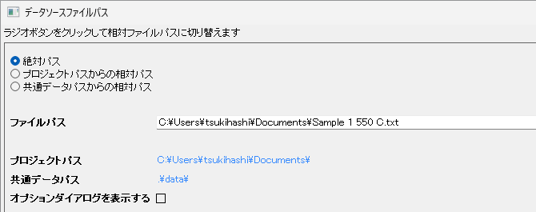
選択して参照し、データソースパスを以下のいずれかの方法で保存します。
- 絶対パス
- プロジェクトパスからの相対パス現在のプロジェクトが保存済みである必要があります。
- 共通データパスからの相対パス詳細については、下記の共通データパスメニューを参照してください。
オプションダイアログを表示をオンにすると、ソースファイルを変更すると、インポートオプションダイアログが開きます。
|
| インポート後に実行するスクリプト
|
インポート後に実行するLabTalkスクリプトを入力します。インポート後のスクリプトについての詳細は下記のインポート後に実行するスクリプトをご覧ください。
|
インポート
全てのブックをインポート
|
- インポート: アクティブなデータ接続シートへのインポート/再インポート
- 全てのブックをインポート: プロジェクトファイル内のすべてのデータ接続シートをインポート/再インポート
|
自動更新
定期的に更新を一時停止
|
プロジェクトのオープン時、ソースの変更時または期間をトリガーにデータを再インポートします。「定期的に更新」がオンになっている場合は、更新間隔を指定して更新処理を一時的に停止することができる。
詳細は以下のセクションを参照ください。
|
| インポートしたデータのロック解除
|
インポートされたデータの編集を有効にするには、これをチェックします。コネクタアイコンをクリックし、インポートを選択してデータを再インポートすると、ロックが解除された状態が維持されます。編集保護を復元するには、インポートオプション.../選択（オプション）...を選択してデータを再インポートします。
|
| インポート後のアクションをリセット
|
インポート後に、インポートしたデータに対して操作を行った場合（例：インポートした列を削除した場合）、再インポート前にこのメニューをオンにすると元の設定にリセットできます。オンにしない場合、インポート後に行った操作は保持されます。
|
| シートを接続しない
|
ワークシート/行列とデータソース間の接続を解除します。また、編集保護も解除します。 コネクタアイコンは残るので、後でデータを再接続してインポートすることができます（その時点で、編集保護が復元されます）。
|
データコネクタを削除
すべてのブックからコネクタを削除
|
以下のデータコネクタを削除します。
- アクティブブックの全シート（データコネクタを削除）
- プロジェクトファイルの全ブック（すべてのブックからコネクタを削除）
全てのシートの編集保護も解除されます。また、保存時にインポートデータを除外のチェックも解除されます。
|
| 保存時にインポートデータを除外
|
チェックを付けるとインポートしたデータを消去しますが、ワークブックやプロジェクトを保存するときは接続を維持するので、プロジェクトサイズを小さくすることができ、必要に応じてデータを簡単に再インポートできます。インポートされたデータからグラフがプロットされている場合は、インポートされたデータが消去された後にグラフにダウンロードボタンが表示されます。

|
たとえば、ヘルプ: ラーニングセンターの解析サンプルタブでサンプル = 統計 - 多変量解析を選択し、サンプルプロジェクト判別分析（Pro） を開きます。「データ: 直接再インポート」メニューでデータの再インポートを試すことができます。また、保存時にインポートデータを除外のチェックを付けたり、外して、プロジェクトサイズの変化を確認できます。
|
|
| 共通データパス
|
データソースメニューでソースファイルにすばやくアクセスするための共通データパスを設定します。このパスは、プロジェクト内のすべてのブック間で共有され、プロジェクトとともに保存されます。
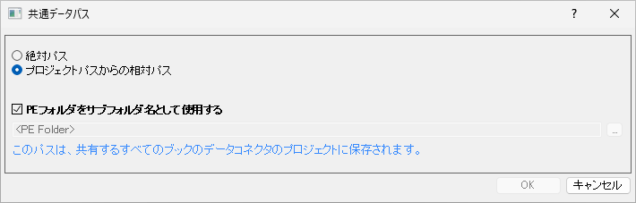
- 通常、共通データパスとして親フォルダを設定します。グループメンバーがアクセスする共有フォルダに共通データパスを設定してから、プロジェクトを共有すると、とても便利です。
- プロジェクトパスからの相対パスを選択した場合、PEフォルダをサブフォルダ名として使用する（構文
<PE Folder> ）をオンにすると、現在のフォルダおよびそのサブフォルダのパスをプロジェクトパスに動的に追加できます。生成されたパスが共通データパスとして使用されます。フォルダを複製メニューと共通データパスを組み合わせて、まったく同じフォルダ構成からデータファイルを一括インポートする例については、こちらを参照してください。
|
| ファイルのチェック一時停止
|
数回チェックした後、ソースファイルが存在しないことが判明した場合、それ以上チェックせず、このメニューにチェックがつきます。アイドルチェックを再開するには、このメニューのチェックを外す必要があります。
|
| ファイルを追加して複製
|
アクティブシートをテンプレートとして使用し、新しいファイルをインポートします。テンプレートには、インポート設定（インポート後に実行するスクリプトも含む）および解析操作が含まれます。複製されたブックでは、解析ツールの再計算モードに関係なく、解析の再計算が自動的に実行されます。
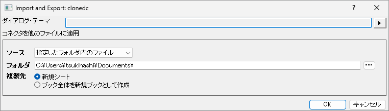
新しいデータファイルを指定するには
- ソース=指定したフォルダ内のファイル
フォルダを指定すると、そのパス内のすべてのファイルがインポートされます。
- ソース=指定したファイル
ファイル名横にある...ボタンをクリックしてファイルを選択します。
複製先を選択
- 新規シート
各新規ファイルは、アクティブなブックの新規シートにインポートされます。
- ブック全体を新規ブックとして作成
新しいファイルは新しいブックにインポートされます。アクティブなブックに複数のシートが含まれているが、インポートシートが1つだけの場合、ブック全体が1つのユニットとして扱われ、すべてのシートが新しいブックに複製されます。次のセクションのクローンインポートも参照してください。
|
データメニューのほかのサブメニュー
| 複数ファイルに接続
|
現在、一部のコネクタタイプは、一度に複数のファイルのインポートをサポートしています。たとえば、ワークブックの場合はCSVおよびExcelコネクタ、行列の場合はMatlab、MetroPro、およびWDFコネクタです。
ダイアログの詳細はこのドキュメントを参照してください。
|
| クローンインポート
|
データファイルをインポートした後、アクティブワークブックをテンプレートとして使って、現在のワークブックの複製に新しいファイルをインポートするのがクローンインポートです。現在のワークブックに解析処理が含まれている場合、解析ツールの再計算モードに関係なく、複製の再計算が自動で実行されます。現在のワークブックにN 個のインポートシートがある場合、クローンインポートではN 個のデータファイルを選択順にグループ化し、それに応じて同じグループを1つのブックにインポートします。
|
|
たとえば、ヘルプ: ラーニングセンターの解析サンプルタブでサンプル = バッチ処理 - クローンインポート を開きます。ワークブックをアクティブにして、データ: クローンインポートメニューをクリックし、ほかのデータを選択します。アクティブワークブックが新しいデータでクローン作成されるのがわかります。
|
Note: クローンインポートはデータ: ファイルからインポートメニューでインポートされたデータで利用できます。
|
インポートされたデータの更新
コネクタアイコン / （データベースコネクタ）をクリックし、自動更新...を選択します：
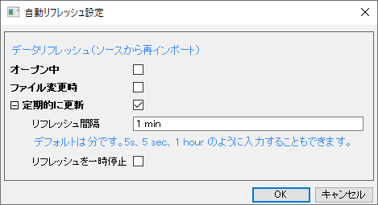
データコネクタは、ソースからのデータの再インポートをサポート：
- 開くとき：プロジェクトを開くときにデータを自動的にインポートする
- ファイル変更時：ソースに変更があった場合に自動的にデータを再インポートするデータベースコネクタでは使用できません。
- 定期的に更新：データを定期的に、自動的に再インポートする。 更新間隔を指定して更新処理を一時的に停止することができます。
- 更新間隔：間隔は5秒から3日の範囲で、5秒単位です。そのため、「10秒」、「1分」、「1時間」など、5秒の倍数を入力する必要があります。
- 更新の一時停止：コネクタアイコンをクリックして、定期的更新の一時停止にチェックを付けると、常に更新を停止できます。
「定期的に更新」を有効にすると、コネクタアイコンがになります。 アイコン上にマウスを置くとツールチップがポップアップ表示され、更新間隔や次の更新までの残り時間などの自動更新情報が表示されます。
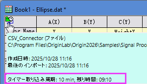
次の再インポートまでのカウントダウンがステータスバーの右隅に表示されます。ステータスバーを右クリックし、テーマ項目のチェックをオフ/オンすることでカウントダウンを非表示/表示することができます。
インポートデータの除外と保存
デフォルトでは、インポートファイルからのデータサイズが500kB より小さい場合はプロジェクトに保存され、それより大きい場合は保存されません。
次のLabTalkシステム変数を使って、データ除外のデフォルト設定を変更できます。
- @DNS: データを除外するかどうかを設定できます。
- @FSE: プロジェクト保存時に除外するデータサイズのしきい値をキロバイトで設定できます。
- @FSEW: 保存時にWeb、JSON、Origin、MATLABデータを除外するためのOriginワークシートのセル数x 100の単位でしきい値サイズを設定できます。
現在のウィンドウに対し、手動でデータ除外の設定を上書きする方法
インポートファイルサイズまたは、@FSE、 @DNS、@FSEWの設定にかかわらず、次の方法でプロジェクトにデータを保存できます。
- コネクタアイコンをクリックして、保存時にインポートデータを除外のチェックを外します。
- ウィンドウタイトルバーで右クリックして、プロパティを選択し、プロジェクト保存時にインポートデータを除外のチェックを外します。
インポート後にスクリプトを実行
@IPDCの現在の値に関係なく、ソースデータへの接続を切断することなく、インポート時にデータを後処理できます。これは、次の2つの方法で実行できます。
インポート後に実行するスクリプトダイアログ
- インポート後、コネクタアイコンをクリックしてインポート後に実行するスクリプトを選択します。
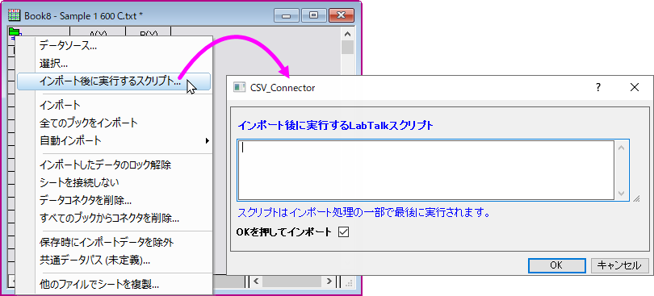
- OKでインポートはデフォルトでオンになっており、OKボタンをクリックした後にデータを再インポートしてスクリプトを実行します。
|
|
例えば、web page-Boston Weather in 1903からJanuary 1903 Boston Weatherの表をインポート後、それぞれの列で平均値を表示するためにユーザパラメータ行として”Mean”行を追加したいとします。
wks.userparam(++Mean);
loop(i,2,wks.dc.c2) { wcol(i)[Mean]$="=Mean(this)";}
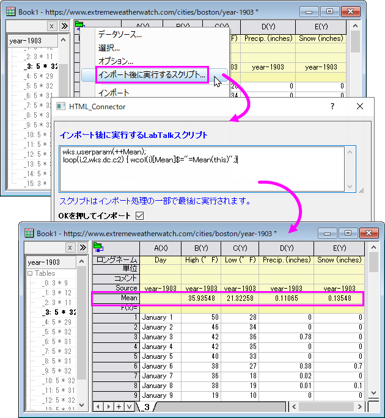
そして、（ドラッグして）ナビゲーションパネルにある複数の表を選択し、アクティブシートを複製して接続のコンテクストメニューを使ってアクティブシートの設定を利用し、12か月の表全てをインポートします。
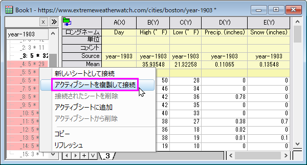
|
- 特に、CSVコネクタでは、他のオプションボタン（OKの左隣りにあります）をクリックします。他のオプションダイアログが開いたら、インポート後に実行するLabTalkスクリプトの編集ボックスにLabTalkスクリプトを入力します。デフォルトに設定ボタンをクリックすると、スクリプトもデフォルト設定として保存されます。
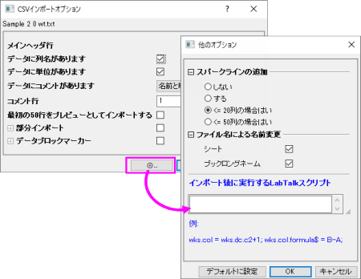
ワークシートプロパティダイアログを使用した組み込みLabTalkスクリプト
ワークシートのプロパティダイアログボックス（ワークシート：ワークシート・スクリプト）を使用してLabTalkスクリプトを組み込むこともできます。
- データをインポートする前に、ワークブックをアクティブにして、ワークシート：ワークシート・スクリプトを選択します。
- スクリプトボックスにスクリプトを入力し、スクリプト実行条件のインポート後にチェックを入れます。接続されたデータは、スクリプトが実行されるまで編集をロックされません。
他の事項：
その他の操作
複数ファイルに接続をサポートするコネクタの他、ほとんどのコネクタは一度に1つのファイル/表をインポートできます。同じWebページの複数の表、または同じパスの複数のファイルをインポートする場合は、ワークシートに追加メニューを使用して同じブックにすばやくインポートできます。
複数のファイル/表を1つのブックにインポートする
- データコネクタによってファイル/表をインポートします。
- ワークシートタブで右クリックして、追加を選びます。
- データコネクタを持つ新しいワークシートが追加されます。データソースにはブック内のデータソースがあらかじめ入力されていますが、接続されていません。これを変更して新しい表をインポートできます。
各ワークブックは異なるデータソースを持つことができますが、コネクタタイプ（テキスト/CSV、JSON、OPJUなど）は1つだけです。つまり、ブック中の各ワークシートは、そのコネクタタイプでサポートされているデータソースをそれぞれ持つことができます。
デフォルトメニューにないデータ型をインポート
- データ: ファイル/Webに接続: 新規追加を選択します。
- これにより、アプリセンターで利用可能なデータコネクタが表示されます。使用したいファイルタイプを探し、ダウンロードします。ダウンロードすると、データメニューに自動的に追加され、使用できるようになります 。このアプリは、アプリギャラリーのコネクタタブにも表示されます。